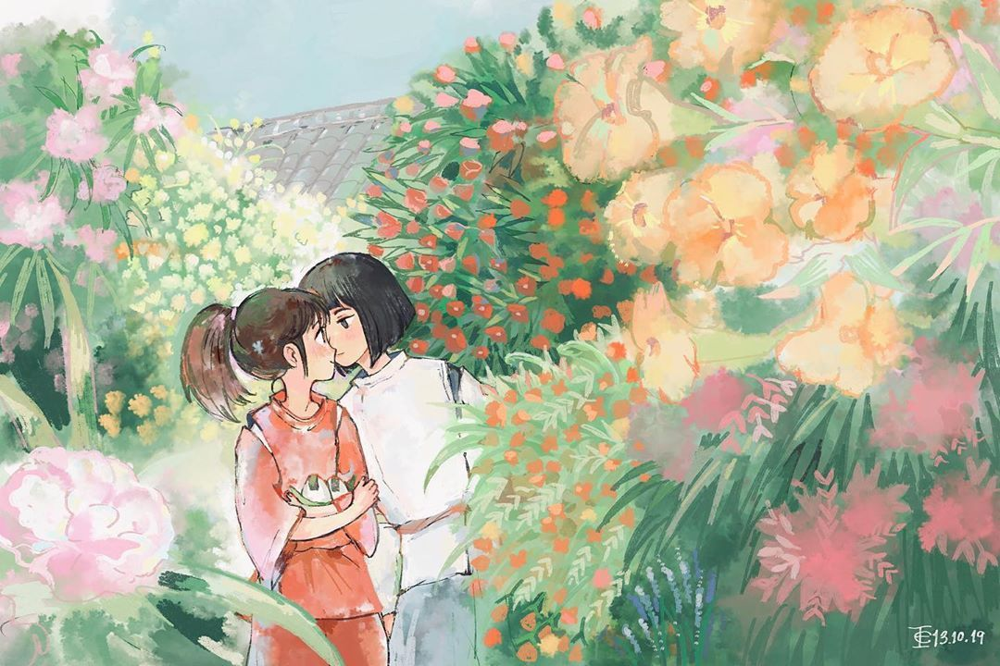

文章
6
标签
5
分类
5
Home
Archives
Categories
Link
About
等到天亮我们都寻找到最漂亮的愿望
Home
Archives
Categories
Link
About
平凡生活里意外的灵魂共鸣
发表于
2022-07-02
|
更新于
2022-07-02
|
浮光掠影
|
字数总计:
0
|
阅读时长:
1分钟
|
阅读量:
文章作者:
Sheeta Liu
文章链接:
http://liuydd.github.io/2022/07/02/lueying/
版权声明:
本博客所有文章除特别声明外，均采用
CC BY-NC-SA 4.0
许可协议。转载请注明来自
等到天亮我们都寻找到最漂亮的愿望
！
idea, 碎片

上一篇
cs61a：从入土到入门
下一篇
种星星的人
Sheeta Liu
生活不需要意义，吃点好的，我也爱你
文章
6
标签
5
分类
5
Follow Me
公告
众生皆苦，唯有自渡...
最新文章
数学模型：人类的构思
2022-07-06
cs61a：从入土到入门
2022-07-02
平凡生活里意外的灵魂共鸣
2022-07-02
种星星的人
2022-07-01
cs61a：从入门到入土
2022-06-30